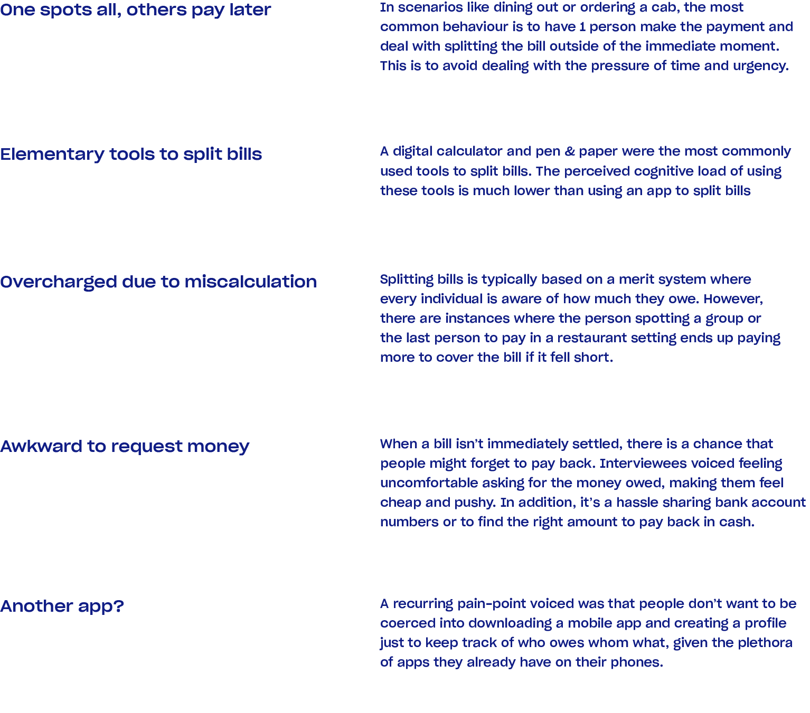

Timeframe: 15 hours over 3 days from start to finish.
Tools: Sketch, Principle, Adobe After Effects.
Prompt: Design a standalone bill splitting app for iOS or Android that addressed the following:
I firmly believe that design is meaningless if not contextually driven. As such, every decision in my design process needs to be a result of understanding the user and the context that it lives in. To kickstart my process, I outlined the following questions to learn, validate and disapprove any assumptions that I may have:
To ground my research in real-life scenarios, I conducted interviews with friends to understand what their experience has been with splitting bills. From these conversations I gathered the following insights:
I quickly realized that the existing applications don’t offer anything more than an intuitive calculator however a significant part of this experience extends to until all debts have been settled and people have been paid back. Based on my research I reframed the initial question of “how might we create a simple and intuitive way to split group expenses?” to:
My main goal while ideating was to make the experience seamless, quick, and efficient. As I started to work out the user flow for this application, I realized several different use cases for a bill splitting app.
(Challenge) I found myself coming up with several ideas that addressed the pain-points highlighted in my research. For example, one friction I picked up on was the inconvenience of passing the paper bill around for people to determine their share, while others wait patiently for their turn. I wrestled with the idea of using computer vision technology to scan and read receipts, to minimize user input while leverage existing technology. However, realizing that this is a standalone bill-splitting app, I reasoned that such technology wouldn’t be very feasible, and doesn’t adapt to existing user behaviours.
I had to scope down and create constraints for myself to prevent this app from being a feature-heavy application. I wanted the app to stay as close to the real-life bill splitting experience where it would zone into a specific user need and serve as a touchpoint to ease frictions rather than adding more tasks for the user. I chose to design an app with the following constraints:
As I moved from pen & paper to medium-fidelity and eventually to high fidelity wireframes, I became aware of some flaws in my logic flow which required me to constantly iterate on the screens. I continuously looked for ways to make the flow as concise and intuitive as possible- combining screens and taking out UI elements unnecessary to achieve the end goal.
(Challenge) In the initial stages of the design, I broke down 2 separate contexts for splitting the bill — split evenly or get each person to input their amount. With this mental model, I created 2 separate flows that were determined based on the user’s input in the “Add tip” screen (see image above). I realized that this was adding unnecessary complexity and offered little flexibility to the user if they changed their mind, needing them to click “Back” twice to change their input. Additionally, moving the option to “Split evenly” in the summary screen is more visually contextual, easing their decision-making process.
Here is a quick application walkthrough video that I made to demonstrate how the user flow
In Canada (where Venmo isn’t available), people are increasingly transferring money online through their banking apps that use Interac e-Transfer. Utilizing Interac’s API, this service would be able to work cross-functionally between different Canadian banks, eliminating the need to input your friends’ banking information to be able to send a money request. This also reduces the cognitive load for the individual owing money, where they are 2 clicks away from transferring money.
The bill-splitting task is far more complex than I first assumed it to be. The most challenging part of the process was recognizing that not all use cases can be solved with one app, especially when prioritizing simplicity and intuitiveness. I was constantly trying to balance giving users agency while not overwhelming them with too many decisions. Due to the tight timeframe of this assignment, I prioritized designing screens that would help understand this product’s narrative. Given more time, the following is what I would work on further: